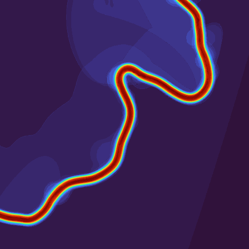
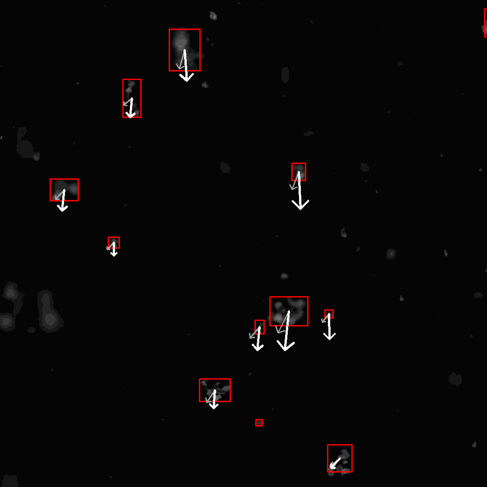
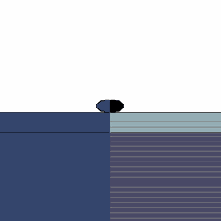
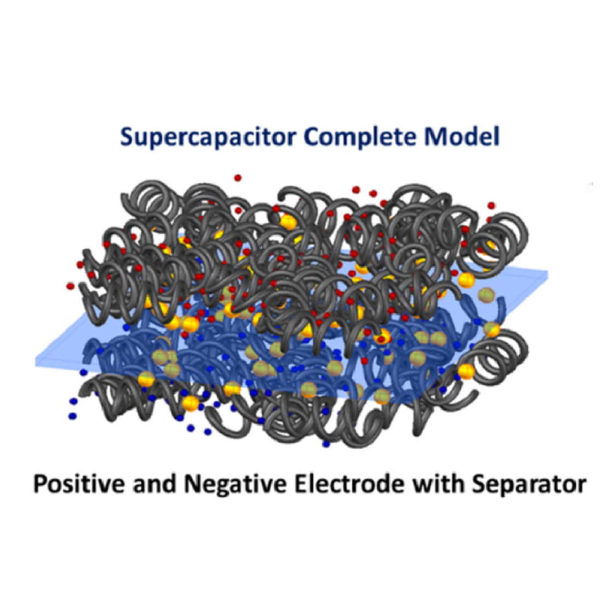

I study earthquake cycles and interactions between tectonic deformation and landscape evolution. Before Harvard I was at Caltech, where I worked with Michael Lamb, Omar Wani, and others on geomorphology and river dynamics.
Some earlier work: geomorphology, earthquake modeling, and data visualization

Geomorphic Risk Maps Cutoffs & Chaos
Cutoffs & Chaos

FractalCNN
Asteroid Deformation River Evolution
River Evolution

Supercapacitor HEV